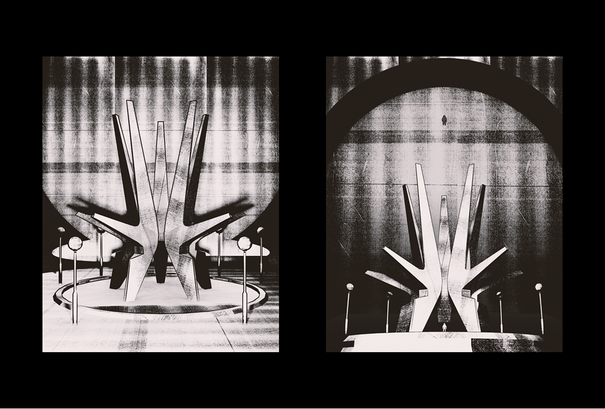
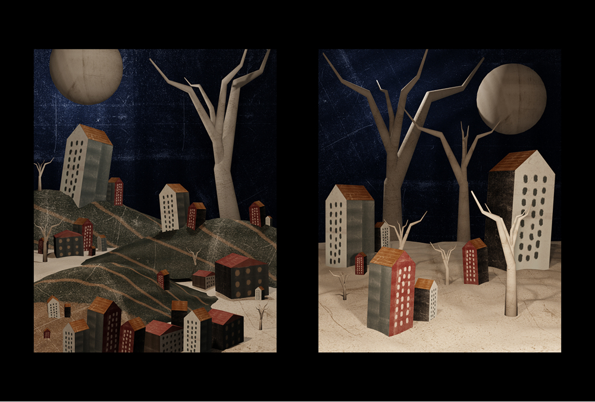
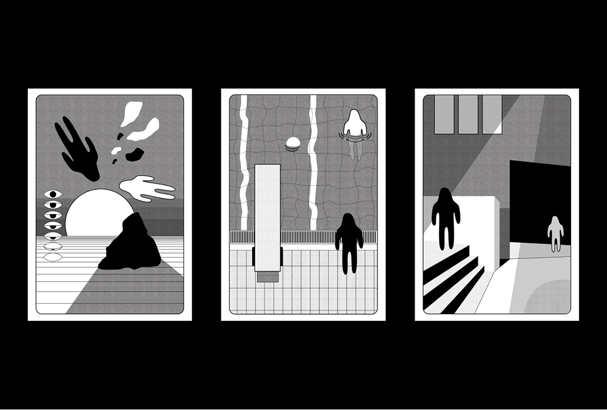
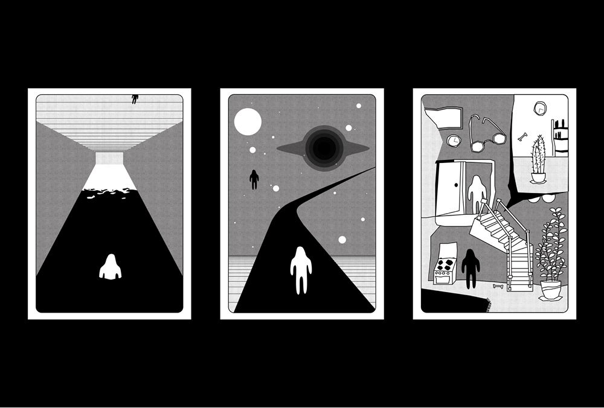
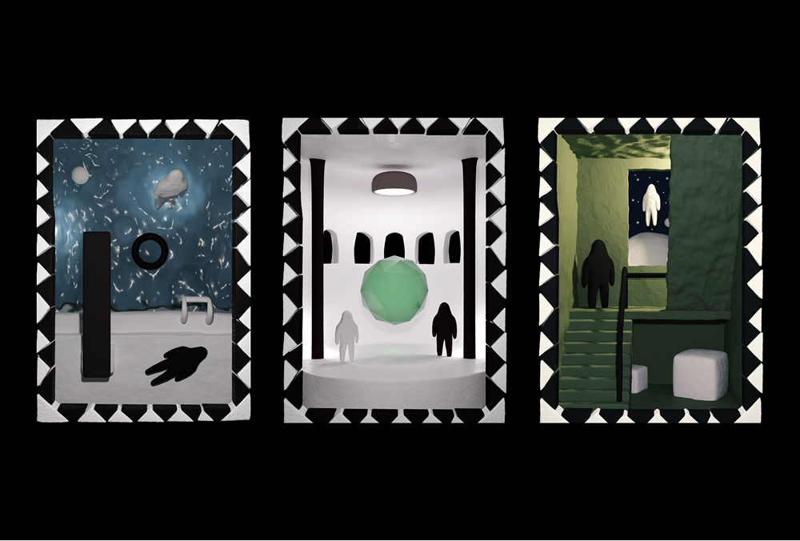

Kosmotomi
It is the form that one reaches from the state of not knowing. Upon realizing how potent the facts of being are, the focus lies entirely on the actuality of the journey — the pulse. Wandering from wonder to wonder, witnessing the unity of timelessness and all things. The approach of exerting the self onto the flow, in the everlasting tendency of relation to propagate in every entity, as holders of separate existences.




